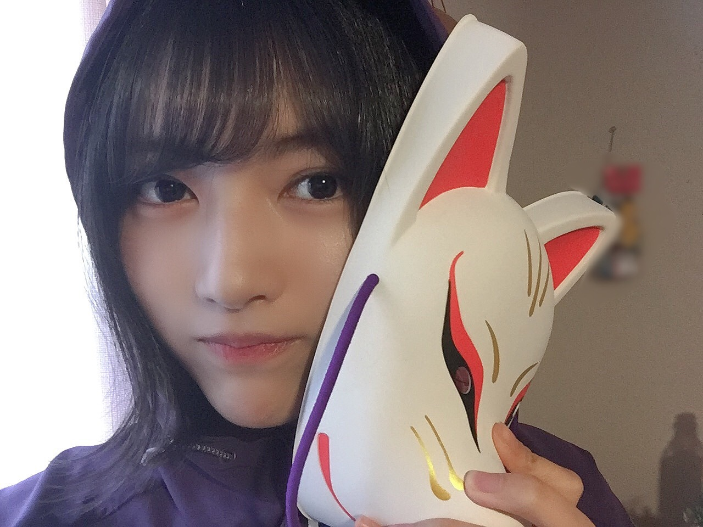
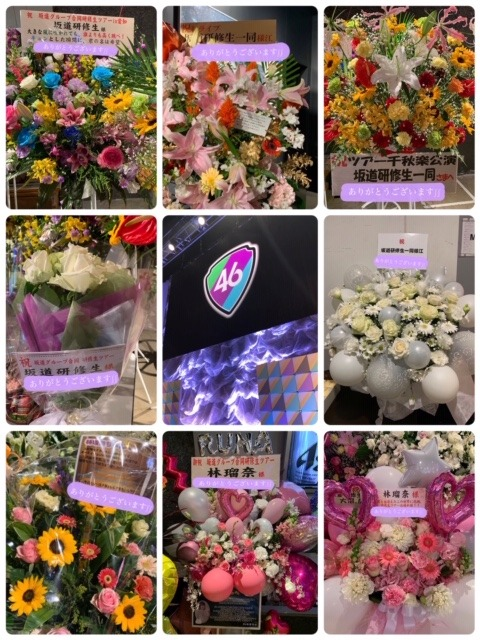

2020/0430Thuやっぱりシンプルに、初めまして。松尾美佑です。
普段はあまり早く回ってくれない頭を全力で回転させたんです。
タイトル、どうしよう。
初めまして！もいいですし、もう少しかっこ良くしたい気もしますし、顔文字がいてくれれば可愛くもできちゃいます。
( ¨̮ )可愛いですこの子。
ですが やっぱりシンプルに、
初めまして。
訪れて下さりありがとうございます。
嬉しいです。本当に。
そんなあなたは優しい心の持ち主です。
林 瑠奈ちゃんからバトンをしっかりと受け取りました！
ボンド、ちゃんと剥がしましたよ。
リレーはみんなと繋がっている気がして好きです☺︎
5人で新しいスタートの日が来るまで、それぞれの走り方で繋げます！
新4期生です。よろしくお願い致します。
名乗ります。
乃木坂46 新4期生になりました、
松尾美佑(まつおみゆ)です。

よろしくお願い致します。
坂道研修生から欅坂46さん、日向坂46さんに加入したみんなのブログを読みながら、私も この話したいなぁ、あの話もしたいなぁ、と思っていました。
そしてたまにみんなが私との写真を載せてくれていたりして。
それはそれはとっっっっっても嬉しい気持ちで読んでいました☺︎
そしてそしてついに
私達5人のブログリレーがはじまりました！
本当に有難いです。
わーーー！！嬉しいです！
5日に1回と、とてもスピーディーに順番が回って来るので ゆっくり沢山 情報を詰め込みたいと思います。
話したい事が沢山頭の中で渋滞しているんですが、
その前にちょっぴり自己紹介をさせて下さい
▷▶▷
✽ 名前 : 松尾美佑 (まつおみゆ)
✽ 誕生日 : 2004年 01月 03日
✽ 年齢 : 16歳 , 高校2年生になりました ⸜✿⸝
✽身長 : 166cm (多分？)(伸びたと思います)
✽ 出来る : バク転などのタンブリング
予告通り、とてもちょっぴりになってしまいました。
私の事、これから少しずつ知って頂けたらなと思います。
ですが私自身も正直よく分からなくて。
パッとイメージした時、私は今の所 特にこれ！と言ってキャラや個性が見つからなくて。
これから見つけたいです(´･-･`)
なので、お手数お掛けしてしまい恐縮ですが、もし良ければこれから一緒に見つけて頂けたら嬉しいです。
( ..)"
何から話しましょうか。
色々と考えていたんです。
ですがまずは、ずーーーっと伝えたかった気持ちから。
沢山 "感謝" を伝えたいです。
私が今ここにいて、こうして乃木坂46の新メンバーとしてブログを書かせて頂けているこの状況。
16年と4ヶ月弱生きてきて、関わって下さった全ての方のお陰です。
"ありがとうございます"
だけだとまだまだちっとも足りません。
配属発表SHOWROOMをさせて頂いた時、意気込みとして『可能性を信じる』と書きました。
自信が無くなった時、悩んだ時、
自分で自分の背中を押せるようにこの言葉を選びました。
なんだかかっこいい文章が出来ましたよ。
可能性を信じて、限界を決めずに精一杯頑張らせて頂きます。
改めて、これからよろしくお願い致します。
目、疲れていませんか( Ꙭ)

【我が家の超絶可愛いまるちゃんパワーでお目目復活( ☉_☉)】
癒された所でもう少し。
今、世界中が見えない敵と戦っています。
毎日のニュースや新聞を見て不安になったり、会いたい人に会えなくてさびしい気持ちになったり、外に出られなくてウズウズしたり。
どうしてもマイナスな気持ちになってしまう方も多いと思います。
私の言葉をそのまま皆さんにお届けできるこのブログという場所を通して、少しでも皆さんのおうち時間を温かなものにするお手伝いが出来たらなと思います。
精一杯みゆスマイルを届けるので受け取って頂けたら嬉しいです¨̮

【みゆスマイルと言うよりみゆニヤニヤ】
ちょっぴり硬すぎる文章になってしまったかもしれません(´･-･`)
実は私、ほんっとに優柔不断で心配性で。
困っちゃいます\(ᯅ̈ )/
こちらのブログも沢山考えて考えて、何度も書き直して、と繰り返しているうちに、
11パターンは初めましてのブログが出来上がりました。
私の心の中では一方的に11度目ましてです。
話したい事が沢山あります。
伝えたい事も沢山あります。
ですが、今回はここら辺で一旦さよならを言わせて頂きます。
また5日後に、今度は初めましてじゃないご挨拶をしましょう☺︎
初めましてのブログ、最後まで読んで下さった方、
あなたです。！！
本当に心の底からありがとうございます。
改めて改めて、これからよろしくお願い致します。
いよいよ、初めましてとお別れのお時間です。
初めまして、ありがとうございました。
何だかしんみりとした所で、
明日は〜
はんな〜りスットコドッコイ！な
弓木奈於ちゃんです！！
お姉ちゃんだけどお姉ちゃんじゃなくて、
しっかりしているけどちょっぴり抜けてて、
隣に居てくれるだけで何だか安心できて、
やっぱり大好きなお姉ちゃんです⸜❤︎⸝
楽しみです！！！
早く明日になーれ
松尾美佑でした。
間違えました
松尾 ミュウ！
でした¨̮
(いつか100点満点を頂けるように頑張って練習します¨̮)
ミュウ！！！！！！！
2020/0429Wedお疲れ様です！林瑠奈と申します。
本日もお疲れ様です！！
初めてお目にかかる方もそうでない方も、こちらのブログを開いて頂き誠にありがとうございます。
乃木坂46新4期生となりました、林瑠奈です。

↑外の林瑠奈
今週から始まりました。リレーブログです。
最初に言います。長いです。
佐藤璃果ちゃんという可視化された天使からバトンを受け取りました。
(リレーは経験がないのでバトンを落としかけましたが、そんなこともあろうかと手の平には木工用ボンドを塗りました。安心して下さい)
ブログというありがたい場を頂けて本当に感謝しています。
これからどうぞよろしくお願い致します。
自己紹介をさせて下さい。
...........................................................................
名前は林瑠奈(はやしるな)です。
オーディションのSHOWROOM審査では
エントリーナンバー8番で、「もやしちゃん」と呼ばれていました。
呼び方を色々と考えたのですが、こちらは
大園玲ちゃん(欅坂46さん新2期生)発案の
「るなぴ」でお願いします。
らしくないでしょう？だからこれにしました。
もちろん「もやしちゃん」でも「フーファイ」でも大丈夫です。
あと、ネタ枠で「るなっさんす」もあります。
でもこれで呼ぶときはテンション884%くらいで呼んでもらわないと頂けないです。
あれ、うっかりはやしになっちゃったっ てへ//
平成15年10月2日生まれの華咲くシックスティーンです。(未年の天秤座、O型)
兵庫県生まれの神奈川県育ちです。
普段は関西弁で話していて、「今日も1日頑張るな」の"頑張るな"は関西のイントネーションです。
身長は164cmで、まだまだ伸びています。
特技は今まで色々と挙げているのですが、どれもしょうもないことばかりで迷走しています。
(最近はラジオパーソナリティーのものまねと、漫才ネタの完コピです。)
好きな食べ物は、オムライス トマト おにぎり 梅干し もやし
そしてお待ちかね...ごはん(ライス)です。
ライスください！！！！！！！れ！
(！ これ打つとたまに「れ」になりません？)
好きなアーティストは、アイドル バンド ボーカロイドetc...なんでも聴きます。
(「むかしむかしのきょうのぼく」この曲は本当に好きで、特に3番のサビ前は今の自分と重なります。おっと、話がそれちゃった てへへ。いつか詳しく書きます。)
よく真顔が怖い、怒ってそうと言われます。そういうときは大抵緊張しているときです。決して怒っているわけでも機嫌が悪いわけでもありません。でもわかります。
\\ 確かにめっちゃこわい。//
口角を上げる意識はしていますが、自撮りでも引きつり顔のときがあります。もっと意識します。
ざっくりこんな感じです。

↑内の林瑠奈
...........................................................................
今まで経験させて頂いたこと、そして今こうしてわたしが言葉を綴れているのは、偉大な先輩方や今まで支えてくださった沢山のスタッフの方、そしてみなさんのおかげです。
SHOWROOM審査の頃から待っていてくださった方
研修生ツアーに足を運んでくださった方
わたしを見つけてくれたあなた(ここ非常に大事)
本当に本当に感謝しています。
...........................................................................
次回からのブログで今までの坂道研修生ヒストリーについて1つづつお話ししていきます。
↑ここ言うの難しいです。
坂道研修生ツアーで頂いたお花です。

本当に綺麗です。ライブ前のストレッチはこの祝花さんたちのすぐ近くでしていたのですが、わたしは1人全力で空気を吸っていました。
超有酸素運動です。
素晴らしい素敵なお花をありがとうございます。頭の中で香りを再現します。
...........................................................................
わたしの名前である"るな"は"月"という意味があります。月は太陽の光がないと輝けません。みんなが見ていないところで光を灯しています。
わたしの名前には「誰にも見えないところでも努力ができる人になって欲しい」という意味があるのだとか。(諸説あります。)
とはいえ本当にわたしはみなさんがいないと輝けません。だから照らしてください。
あなたが照らしてくれるからわたしが輝けます。いつか、わたしがいるからあなたが輝ける。
素直になれないし真顔怖いし不器用なところも多いですが、そんな風になれるように命懸けて頑張ります。
これからどうぞよろしくお願い致します！！！
...........................................................................
申し訳ありません、長くなってしまいました。
明日は妖精の松尾美佑ちゃんです。
みゆちゃんはわたしの大先生であり、みんなの天使であります。いや、わたしだけのかもしれません。きっと明日もみゆスマイルを届けてくれます。みゆちゃん大好き
あっお待たせしました。
負けるなしょげるな林瑠奈、今日も1日頑張るな
頑張ってもいいし、疲れたら休むでもオッケーです。
読んでくださりありがとうございました。
アディオス！！！！！！！！！！！！！
2020/0428Tueこの日をずっと夢みてた。初めまして。佐藤璃果
皆さん、初めまして。
ブログを開いてくださって
皆さんに出会うことが出来て、
嬉しいです。
運命ですね。。。
出会って下さってありがとうございます。
坂道研修生から乃木坂４６に
配属して頂きました。
岩手県出身の佐藤璃果です。
(↑佐藤璃果)
（↑全身佐藤です。こちらは研修生ツアーの時に撮って頂いたものになります。制服のマネキン衣装を着させて頂きました。感謝です。）
昨日から始まったブログリレー。
黒見明香 ちゃんからバトンを受け取りました。( ´ ` *)
よろしくお願い致します。
皆さんに自分の想いを伝えられるブログという、とても大事な場に私達も参加できること、本当に嬉しいです。
ありがとうございます。
自己紹介をさせて下さい。
***自己紹介***
○名前： 佐藤 璃果（さとうりか）
漢字が予測変換に出てこない！瑠璃（るり）果実（かじつ）で変換してもらえると◎
○出身地 : 岩手県
乃木坂46初の岩手県です~
○生年月日: 2001年8月9日
野球（8と9）の日とだね~と言わたれことがあります。
○好きな食べ物： インドカレー お肉 お魚（特に鯖とサーモン） 焼き芋(特に好きな品種は安納芋) 揚げ物 パン 生クリーム......etc
○好きなアーティストさん : BISHさん
(他にもアイドルさんとかバンドの方の曲とか、映画のサウンドトラックとか聴いたりしています。)
❁
最近の私出来事。~~~~~~~~~~~~~~~~~~
メガネで玉ねぎを切るとしみることに気づく。
(ずっとコンタクトの力に助けられていた様です。)
コンタクト君もメガネ君もありがとう。
❁
これから沢山知って頂けたらと思います。
*****************************************
今日まで本当に沢山の事を経験させて頂きました。
レッスン、坂道研修生ツアー、雑誌のお仕事、インタビュー、8th YEAR BIRTHDAY LIVEでの自己紹介、個人PVの撮影、写真撮影、「乃木坂工事中」の収録・・・
毎回たくさん反省し
学ばせていただいています。(´._.`)
こうして私達が坂道研修生ツアーや、色々なお仕事をさせていただけたのは、今まで乃木坂46を築いてきて下さった先輩方、沢山のスタッフさん、携わってくださったみなさまのお力です。
本当にありがとうございます。
この恵まれた環境に
感謝の想いでいっぱいです。
それぞれの活動について次からのブログで一つ一つお話させて頂きたいと思います！
*****************************************
SHOWROOM配信の時からずっとずっと
待っていてくださった方。
少しでも興味をもって応援したいと
思っていて下さった方。
今、初めての私の存在を知ってくださった方。
本当にありがとうございます。
*****************************************
坂道研修生ツアーの時、
素敵なお花やうちわ、自家製の私の名前入りタオル、ボード、SHOWROOM時代の写真が貼られた紙、応援してくださる声、目が合った時には手を振ってくださったり・・・
本当に本当に嬉しかったです。( ˶˙ᵕ˙˶ )
私達15人の不安な気持ちとは裏腹に皆さんが優しくて優しくて...沢山の温かい想いを受け取りました。

個人へのお花も15人全員へのお花も
とても嬉しかったです！
可愛くて、綺麗で、素敵なお花、
ありがとうございました︎︎☺︎
何回も見返して元気をもらっています。
次からのブログでって言ったのに研修生ツアーの事少し書いちゃった...！
*****************************************
私の人生にとって乃木坂46が
必要があり不可欠な存在であったように
私も誰かのこころや人生に
必要不可欠な存在になりたいなと思っています。
そして、大好きな乃木坂46に少しでも貢献できるようになりたいです。
努力・感謝・笑顔を忘れずに頑張らせて頂きます。
*****************************************
真面目そうって思われた方！
実はこうみえて長く一緒にいた友達からは
｢大分抜けてる｣とか｢不思議｣｢おっちょこちょい｣とかも言われるんですよ~~
今日はこれぐらいで。
伝わったかなぁ...長かったかなぁ...
(次からは短いので安心して下さい笑)
読みづらい部分もあったかもしれませんが読んで下さってありがとうございました︎︎☺︎

またブログを読んでくれたらいいなぁ
そしたら嬉しいな。
*****************************************
明日は林瑠奈ちゃんです。
とても面白くて、5人の中だったら場を盛り上げてくれるんです~！頑張り屋さんです。
瑠奈ちゃんとはよく目が合うんです( Ꙭ)
*****************************************
皆さんにとって今日が素敵な一日になりますように。
あっ間違って全部消しちゃって書き直したのは内緒です。笑
またね。
#1 ❁ り か ❁
2020/0427Monみなさま 初めまして☺︎ 新４期生です。黒見明香
すこーしだけ自己紹介させてくださいませ☺︎
黒見 明香（くろみ はるか）
2004年1月19日生まれ 16才
香港生まれ・東京都出身です
黒見ちゃん・くろみん と呼ばれています
他には・・・3の倍数9・6・3(くろみ)
くろみつきなこ、ハッピーベイビーなどなど笑
実は おしゃべり好きで、お顔を覚えるのが得意です☺︎
翌年のオーディションセミナーの時に 秋元真夏さん♡鈴木絢音さん♡久保史緒里さんがキラキラした美しい笑顔で、乃木坂46の大切なお話を聞かせて下さいました✩︎⡱
中学校に上がってもカタカナが怪しく「オケーストラァ」「テェッシュー」と書いて、学校で『バレないよう気をつけてね(´•ω•; )』と心配されたりしていました。

何もない私にも、声援を送って下さり、手作りのボード、タオルやうちわを振って下さり、みなさんの顔が「大丈夫！頑張れ！」と伝えて下さっているのが感じられて、弱気になりそうな私の背中を押してくれました。
いま、15人それぞれの坂を登り始めました。
勇気を出してオーディションを受けた全ての女の子の想いも胸に、一緒に背負っていきたいです。


今、みなさんが一日一日が大変な時に、
読んでくださり、本当にありがとうございます☺︎

自撮りとメイク練習中でごめんなさい、前髪が伸びてしまいヘアスタイル悩み中です;;